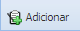
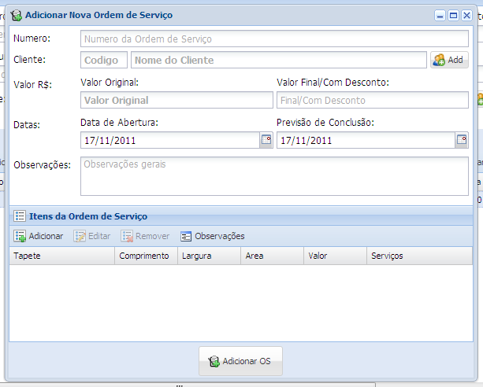
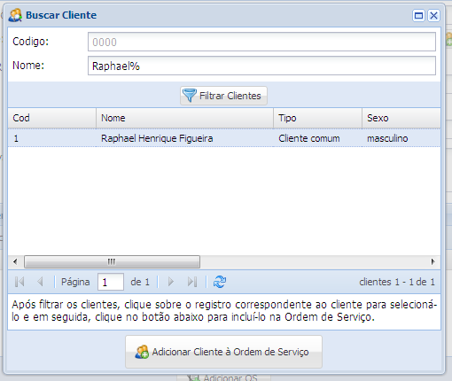
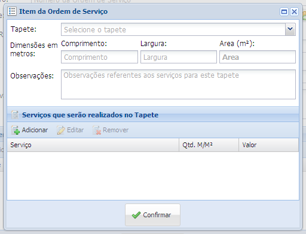
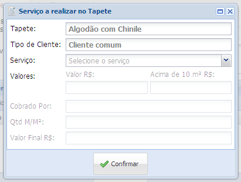
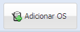

• Adicionar nova ordem de serviço
1. Clique no botão Adicionar para adicionar uma nova ordem de serviço

2. Abrirá uma nova janela

Preencha o campo Número e clique no botão Add
3. Abrirá uma nova janela

Faça uma busca pelo código do cliente ou nome e clique no botão Filtrar Clientes, selecione o cliente desejado e clique no botão Adicionar Cliente à Ordem de Serviço.
4. Voltará na janela de criação da ordem de serviço, selecione no campo Datas as datas de abertura, previsão de conclusão e clique no botão Adicionar para adicionar um item na ordem de serviço.
5. Abrirá uma nova janela

Selecione o tipo de tapete desejado no campo Tapete e preencha as opções de dimensão do tapete no campo Comprimento e Largura.
6. Clique no botão Adicionar, para adicionar um serviço a ser realizado no tapete
7. Abrirá uma nova janela

Selecione o serviço desejado pelo cliente no campo Serviço e clique no botão Confirmar
8. Clique no botão confirmar da janela de Item da Ordem de Serviço e por fim clique no botão Adicionar OS para gerar a nova ordem de serviço.
